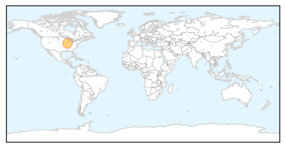
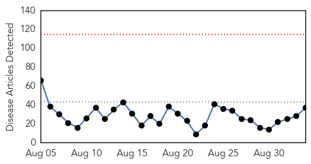

Mumps
30-Day Web Trend
2 alerts, 0 warnings

30-Day Twitter Trend
1 alerts, 0 warnings

Article Locations
Article Confidences

Top Articles:
Top Tweets:
-
No tweets found for Sep 03, 2015
Ebola
30-Day Web Trend
0 alerts, 0 warnings

30-Day Twitter Trend
0 alerts, 0 warnings

Article Locations

Article Confidences

Top Articles:
- 1.000
- Liberia Declared Ebola-Free Again
- 1.000
- Liberia Ebola Free, Enters 90-Day "Heightened Surveillance Period"
- 1.000
- WHO Declares Liberia Free Of Ebola Virus Transmission
- 1.000
- WHO declares Liberia free of Ebola for second time
- 1.000
- Close the Borders Now!
- 1.000
- Liberians hope to get on with their lives, says health minister, after country declared Ebola-free
- 1.000
- Ebola Virus Disease — Sierra Leone and Guinea, August 2015
- 1.000
- Liberia free of Ebola for second time
- 0.999
- Nurse returns to Kettering General Hospital after helping people with Ebola in Sierra Leone
- 0.999
- Liberia reaches Ebola-free status for 2nd time
- 0.998
- MRU countries recommend information sharing
- 0.998
- WHO Director-General addresses Institute of Medicine Ebola workshop - Sierra Leone
- 0.998
- Liberia declared free of Ebola transmission…Part 2
- 0.997
- Primate Ebola vaccine slowed by US ban on chimp testing
- 0.997
- WHO declares Liberia Ebola-free for second time
- 0.997
- Health Watch: Flu Season
- 0.996
- Virucidal Efficacy of BETADINE(R) Formulations Proven Against MERS[1]
- 0.995
- Ebola transmission in Liberia over. Nation enters 90-day intensive surveillance period
- 0.995
- 'Team Ebola' thanks family members
- 0.990
- 20 Years of Ebola, and How Photography Has Changed
- 0.989
- Thomas Eric Duncan, the Ebola patient in dire shape
- 0.989
- Physicians overestimate ability to assess Ebola, study finds — The Daily Free Press
- 0.987
- WHO using ring vaccine approach against Ebola
- 0.985
- Top U.S. Ebola Fighter Warns Australian Miners In Africa
- 0.984
- Ebola Still Threatens the World
- 0.983
- Is PC a deadly epidemic?
- 0.957
- Sierra Leone Reports No New Ebola Cases
- 0.940
- For 2nd year, Ebola-hit Guinea’s Muslims barred from Hajj
- 0.939
- Nigeria: Ebola virus disease - Emergency Plan of Action Final Report - Nigeria
- 0.925
- For 2nd year, Ebola-hit Guinea’s Muslims barred from Hajj
- 0.896
- Mercer County Correction Center locked down this morning because of illness
- 0.808
- Cameroon-born Liberty health expert shares about time in Ebola-stricken Guinea
- 0.752
- Sierra Leone News: NERC will exist till December -President Koroma « Awoko Newspaper
- 0.743
- President Koroma receives credentials from three new ambassadors
- 0.642
- New Chimp Research Ban Could Hamper Ebola Vaccine Efforts to Protect Wild Apes, Researcher Says
- 0.631
- Ebola is still in the Sub-region – Foroyaa Newspaper
- 0.620
- As 50 patients receive free medical…We will repeat free medical treatment on monthly basis – Dr Kanu « Awoko Newspaper
Top Tweets:
- 0.977
- 200 to Be Vaccinated In Sierra Leone After Ebola Death - TIME http://t.co/aWrY2CvQ2G ebola EVD
- 0.969
- Sanford Health offers clinical trials of Ebola vaccine in Fargo - WDAY http://t.co/sIvZye1rx8 ebola EVD
- 0.969
- Sanford Health offers clinical trials of Ebola vaccine in Fargo - WDAY http://t.co/fHOdmubYOT ebola EVD
- 0.927
- Liberia declared free of Ebola spread -- again: WHO - Yahoo News http://t.co/otdGiix3Gx ebola EVD
- 0.902
- Liberia once again Ebola-free, WHO says - CNN http://t.co/uzt7PkkLTA ebola EVD
- 0.827
- Many physicians overestimate ability to assess risk of Ebola, study finds - Daily Free Press (subs... http://t.co/IL3pzTEb39 ebola EVD
- 0.815
- Liberia’s ability to effectively respond to the Ebola outbreak is due to intensified vigilance & rapid response by the govt & partners
- 0.804
- Young nurse asked to adopt newborn after mom dies of Ebola - Hastings Tribune http://t.co/DcNeZxXRvL ebola EVD
- 0.772
- RT: Active Ebola transmission continues in Guinea & Sierra Leone, but reported cases at lowest point in a year. @CDCMMWR htt…
- 0.772
- 200 to Be Vaccinated in Sierra Leone After Ebola Death - TIME http://t.co/YKnUluafKv
- 0.746
- Sanford Health offers clinical trials of Ebola vaccine in Fargo - WDAY http://t.co/lOBHFDciO1
- 0.746
- Sanford Health offers clinical trials of Ebola vaccine in Fargo - WDAY http://t.co/COZ0fpTwoT
- 0.744
- Ebola scare shuts down Mercer County Correctional Facility - The Trentonian http://t.co/hHUggmzPN0 ebola EVD
- 0.728
- Today, WHO declares Liberia free of Ebola virus transmission in the human population http://t.co/5uSSVsTNlx
- 0.692
- RT: Today, WHO declares Liberia free of Ebola virus transmission in the human population http://t.co/5uSSVsTNlx
- 0.687
- Active Ebola transmission continues in Guinea & Sierra Leone, but reported cases at lowest point in a year. @CDCMMWR http://t.co/LG4Wg04blU
- 0.674
- The risk that exotic infectious agents, such as Ebola or Middle East respiratory (MERS), will be imported into Europe is extremely low
- 0.665
- Still Learning to Stop Ebola, One Year Later - NBC 5 Dallas-Fort Worth http://t.co/Ha9Bvat9F4 ebola EVD
- 0.655
- Liberia hopes second time lucky as it is declared free of Ebola again - Mail & Guardian Africa http://t.co/VYaGCqvrni ebola EVD
- 0.640
- 3 Sept - news pouch on avianflu avianinfluenza Ebola EbolaResponse MERS is here: http://t.co/KTC9YhfsGg
- 0.631
- Guinée. La Police se sont mobilisés pour intensifier les mesures de prévention face à l’épidémie Ebola: http://t.co/6tcX6QTA0u
- 0.598
- Sierra Leone to vaccinate 200 people connected to Ebola victim http://t.co/Ncyk9UTpXI
- 0.573
- RT: New Ebola death has prompted vaccination of 200 contacts in Sierra Leone - hopefully it's enough: http://t.co/vCUO8WWUYb gl…
- 0.512
- Liberia declared free of Ebola spread -- again: WHO - Yahoo News http://t.co/x6xMREV5Ma
- 0.509
- Using solar power to beat Ebola - International Federation of Red Cross and Red Crescent Societies http://t.co/0Rr4Nrxq6N ebola EVD